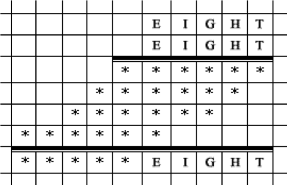

Restore the example of the multiplication.

Let EIGHT = x, then $EIGHT^2$ - EIGHT = x $(x - 1)$. But the difference $EIGHT^2$ - EIGHT ends in five zeros. Since x and x - 1 are consecutive numbers, one of them is divisible by 32, and the other is odd and is divisible by 3125 $(100000 = 32 \times 3125)$. Note that the second digit of the number $(I)$ is zero $($ see the multiplication scheme $)$. Five-digit numbers, which are multiples of 3125 and satisfy the condition I = 0, are 40625 and 90625. The consecutive numbers are 40624 and 40626, 90624 and 90626. Only 90624 is divisible by 32. So the desired number is 90624 or 90625. The first one does not fit, since 4⊃ does not end in 4.
EIGHT = 90625.